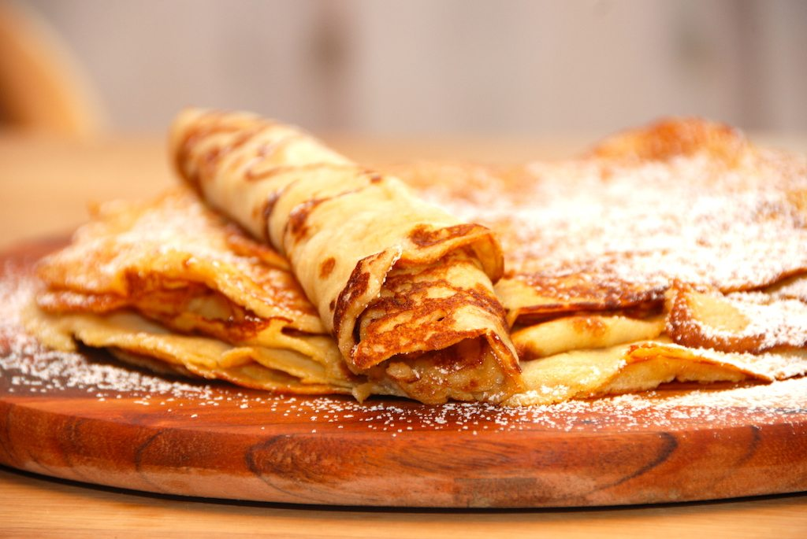

Opskrift:
Æg og mel piskes sammen. Heri piskes det varme smeltede smør, spædes med mælk og tilsmages med salt, sukker og vanille.
Bag pandekagerne lysebrune i smør på panden. Der bliver 8-12 pandekager alt efter pandens størrelse. 12 stk. med pande på 19 cm. i diameter.
Server pandekagerne med, sukker og syltetøj, blød vanilleis eller flødeskum.
Kilde: https://www.dk-kogebogen.dk/opskrifter/31044/pandekager-gammeldags
